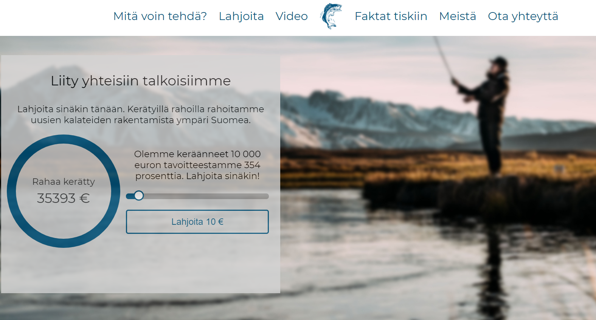

The idea of this project was to to a campaign website for or against a renewable energy source.
Our campaign was against hydropower and the website was made to fit this purpose.
The idea of the site is to be simple yet eye-caching and interactive. The frontend is made with react and backend with node.js.
I was in charge of the design. I also did most of the backend and participated in the frontend. This project got the best grade out of 10 websites. The site was initially built in Codesandbox and then moved to Antti Vuorenmaa's Github profile.
You can visit this site at www.kalakannatkuntoon.fi.
